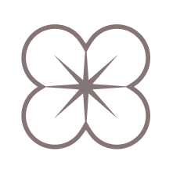

meet the designer
Hi! I’m Corynn, currently studying interaction design at the University of Waterloo. In terms of my personal design principles, I value cohesive, intentional, & user-friendly visual elements in all my works.
fields of interest

User Experience

While I’ve consistently done graphic design projects, I’ve also began designing with users & interactions in mind. As a private swim instructor, I was able to use my design skills to create comprehensive report cards tailored to individual students & needs.
Graphic Design

In terms of graphic design work, I’ve completed a number of logo redesign projects. This highlighted considerations of brand identity & icon readability, altering my design process.